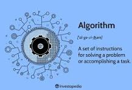
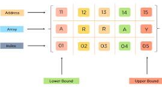

HTML INTRODUCTION:

HTML, or HyperText Markup Language, is the standard markup language used to create web pages.
It’s a combination of Hypertext, which defines the link between web pages, and Markup language,
which is used to define the text document within tags to structure web pages. This language is used to
annotate text so that machines can understand and manipulate it accordingly. HTML is human-readable and uses tags to
define what manipulation has to be done on the text.
This guide will help you understand the workings of HTML and explain it with examples.
What is HTML?
HTML stands for HyperText Markup Language and it is used to create webpages.
It uses HTML tags and attributes to describe the structure and formatting of a web page.
HTML consists of various elements, that are responsible for telling search engines how to display page content.
For example, headings, lists, images, links, and more.
Learn DSA:Data Structures and Algorithms
Data Structures and Algorithms (DSA) refer to the study of methods for organizing and storing data and the design of procedures (algorithms) for solving problems, which operate on these data structures. DSA is one of the most important skills that every computer science student must have. It is often seen that people with good knowledge of these technologies are better programmers than others and thus, crack the interviews of almost every tech giant.
This DSA tutorial aims to help you learn Data Structures and Algorithms (DSA) quickly and easily.
What is a DSA?
Data Structures and Algorithms (DSA) refer to the study of methods for organizing and storing data and the design of procedures (algorithms) for solving problems,
which operate on these data structures.
The topic of DSA consists of two parts:
1. Data Structures
2. Algorithms


Data structures are essential components that help organize and store data efficiently in computer memory. They provide a way to manage and manipulate data effectively, enabling faster access, insertion, and deletion operations. Common data structures include arrays, linked lists, stacks, queues, trees, and graphs , each serving specific purposes based on the requirements of the problem at hand.
Understanding data structures is fundamental for designing efficient algorithms and optimizing software performance.
INTRODUCTION TO JAVASCRIPT

What is a javascript?
JavaScript is a lightweight, cross-platform, single-threaded, and interpreted compiled programming language. It is also known as the scripting language for webpages. It is well-known for the development of web pages, and many non-browser environments also use it.
JavaScript is a weakly typed language (dynamically typed). JavaScript can be used for Client-side developments as well as Server-side developments. JavaScript is both an imperative and declarative type of language. JavaScript contains a standard library of objects,
like Array, Date, and Math, and a core set of language elements like operators, control structures, and statements.